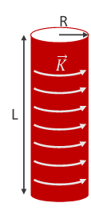

Ejemplo: Solenoide infinito: Cilindro infinito con K azimutal uniforme
Dada una distribución de corriente azimutal, distribuida de uniformemente en forma cilíndrica con radio R y longitud L tendiendo a infinito, vamos a hallar el campo magnético que genera en todo el espacio

1) Determinar la dependencia del campo con las coordenadas espaciales
- Simetría de rotación en \(\varphi\) y de traslación en \(z\) (me muevo y veo lo mismo)
2) El sentido del campo: lo deduzco con la Regla de la mano derecha o lo dejo positivo
- \(\vec B = B(\rho) \hat k\) (dentro del solenoide)
- \(\vec B = \vec 0\) (fuera del solenoide)
3) Elegir una curva amperiana

Obs.: Si tomo una curva de ampere que concatene tanto corrientes entrantes como salientes a la pantalla, no está mal pero llego a algo trivial: 0=0.
4) Aplicar la ley de Ampère integral para calcular la intensidad del campo.
\begin{align} \oint_C \vec B \cdot d \vec l = \mu_0 i_{conc(S(C))} \end{align} \begin{align} \int_{BA} B(\rho) \hat k \cdot d \vec l + \int_{AD} B(\rho) \hat k \cdot d \vec l + \int_{DC} B(\rho) \hat k \cdot d \vec l + \int_{CB} B(\rho) \hat k \cdot d \vec l = \mu_0 \int_{L(C)} \vec K (\vec r) \cdot dl \hat n_L \end{align}- \(\hat n_L\) va en dirección de circulación elegido de la curva. (regla de la mano derecha)
- \(L(C)\) es la curva que resulta de la intersección entre la superficie plana de limiteada por la curva de Ampere C y la distribución de corriente.
De las 4 integrales de la izquierda, solo queda la del tramo \(\overline BC\). Las otras se cancelan por ser perpendiculares al campo (\(\overline BA\) y \(\overline DC\)) o porque el campo es \(\vec 0\) (\(\overline AD\))
Del lado derecho el \(\vec K\) es paralelo y de sentido contrario a \(\hat n_L\). Y el resultado de la integral es \(l\) porque es la cantidad de carga encerrada en el area de la curva amperiana.
\begin{align} - B(\rho) \int_0^l dl &= -\mu_0 K\int_{L(C)} 1 \cdot dl \\ - B(\rho) \int_0^l dl &= -\mu_0 K l \\ B(\rho) &= \frac{\mu_0 K l}{l} \end{align} \begin{align} \hat B(\rho) = \mu_0 K \hat k = \mu_0 \frac NL I \hat k \end{align}